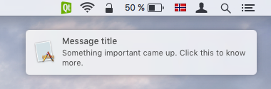

SystemTrayIcon QML Type
A system tray icon. More...
| Import Statement: | import Qt.labs.platform |
| Inherits: |
Properties
- available : bool
- geometry : rect
(since Qt.labs.platform 1.1 (Qt 5.12)) - icon
(since Qt.labs.platform 1.1 (Qt 5.12))- icon.mask : bool
(since Qt.labs.platform 1.1 (Qt 5.12)) - icon.name : string
(since Qt.labs.platform 1.1 (Qt 5.12)) - icon.source : url
(since Qt.labs.platform 1.1 (Qt 5.12))
- icon.mask : bool
- menu : Menu
- supportsMessages : bool
- tooltip : string
- visible : bool
Signals
- activated(ActivationReason reason)
- messageClicked()
Methods
- void hide()
- void show()
- void showMessage(string title, string message, MessageIcon icon, int msecs)
Detailed Description
The SystemTrayIcon type provides an icon for an application in the system tray.
Many desktop platforms provide a special system tray or notification area, where applications can display icons and notification messages.
The following example shows how to create a system tray icon, and how to make use of the activated() signal:
SystemTrayIcon { visible: true icon.source: "qrc:/images/tray-icon.png" onActivated: { window.show() window.raise() window.requestActivate() } }
Tray menu
SystemTrayIcon can have a menu that opens when the icon is activated.
The following example illustrates how to assign a Menu to a system tray icon:
SystemTrayIcon { visible: true icon.source: "qrc:/images/tray-icon.png" menu: Menu { MenuItem { text: qsTr("Quit") onTriggered: Qt.quit() } } }
Notification messages
SystemTrayIcon can display notification messages.

The following example presents how to show a notification message using showMessage(), and how to make use of the messageClicked() signal:
SystemTrayIcon { visible: true icon.source: "qrc:/images/tray-icon.png" onMessageClicked: console.log("Message clicked") Component.onCompleted: showMessage("Message title", "Something important came up. Click this to know more.") }
Availability
A native system tray icon is currently available on the following platforms:
- All window managers and independent tray implementations for X11 that implement the freedesktop.org XEmbed system tray specification.
- All desktop environments that implement the freedesktop.org D-Bus StatusNotifierItem specification, including recent versions of KDE and Unity.
- All supported versions of macOS. Note that the Growl notification system must be installed for showMessage() to display messages on OS X prior to 10.8 (Mountain Lion).
The Qt Labs Platform module uses Qt Widgets as a fallback on platforms that do not have a native implementation available. Therefore, applications that use types from the Qt Labs Platform module should link to QtWidgets and use QApplication instead of QGuiApplication.
To link against the QtWidgets library, add the following to your qmake project file:
QT += widgets
Create an instance of QApplication in main():
#include <QApplication> #include <QQmlApplicationEngine> int main(int argc, char *argv[]) { QApplication app(argc, argv); QQmlApplicationEngine engine; engine.load(QUrl(QStringLiteral("qrc:/main.qml"))); return app.exec(); }
Note: Types in Qt.labs modules are not guaranteed to remain compatible in future versions.
See also Menu.
Property Documentation
available : bool |
This property holds whether the system tray is available.
geometry : rect |
This property holds the geometry of the system tray icon.
This property was introduced in Qt.labs.platform 1.1 (Qt 5.12).
This property holds the system tray icon.
SystemTrayIcon { icon.mask: true icon.source: "qrc:/images/tray-icon.png" }
This QML property was introduced in Qt.labs.platform 1.1 (Qt 5.12).
menu : Menu |
This property holds a menu for the system tray icon.
supportsMessages : bool |
This property holds whether the system tray icon supports notification messages.
See also showMessage().
tooltip : string |
This property holds the tooltip of the system tray icon.
visible : bool |
This property holds whether the system tray icon is visible.
The default value is false.
Signal Documentation
activated(ActivationReason reason) |
This signal is emitted when the system tray icon is activated by the user. The reason argument specifies how the system tray icon was activated.
Available reasons:
| Constant | Description |
|---|---|
SystemTrayIcon.Unknown | Unknown reason |
SystemTrayIcon.Context | The context menu for the system tray icon was requested |
SystemTrayIcon.DoubleClick | The system tray icon was double clicked |
SystemTrayIcon.Trigger | The system tray icon was clicked |
SystemTrayIcon.MiddleClick | The system tray icon was clicked with the middle mouse button |
Note: The corresponding handler is onActivated.
messageClicked() |
This signal is emitted when a notification message is clicked by the user.
Note: The corresponding handler is onMessageClicked.
See also showMessage().
Method Documentation
void hide() |
Hides the system tray icon.
void show() |
Shows the system tray icon.
Shows a system tray message with the given title, message and icon for the time specified in msecs.
Note: System tray messages are dependent on the system configuration and user preferences, and may not appear at all. Therefore, it should not be relied upon as the sole means for providing critical information.
See also supportsMessages and messageClicked().